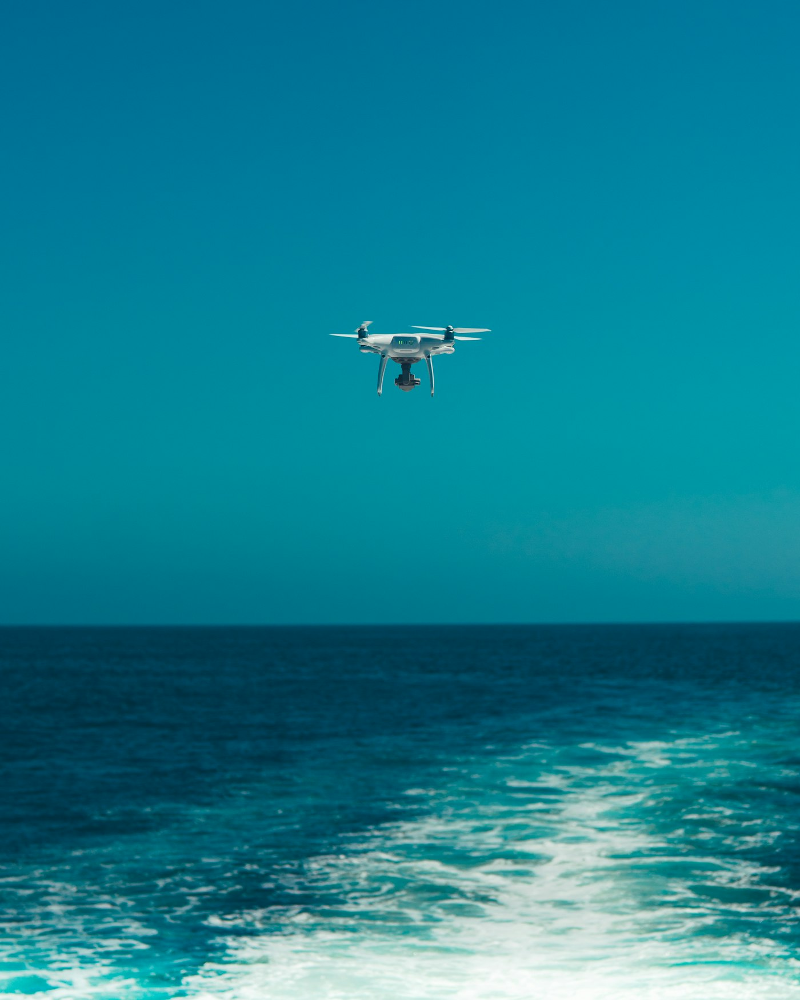

Ваша дитина вчиться будувати майбутнє, а не боятися його
Розуміємо вашу тривогу. Тому говоримо чесно: у нашій інженерній школі дрон — це наука й професія, а не війна. Фізика, електроніка, код і впевненість у власних силах — ось що дитина забере з собою.
«Дрон» — це не про війну. Це про науку
Ми знаємо, який образ виникає першим: новини, фронт, тривога. Скажемо прямо — на нашій програмі діти не вчаться воювати. Дрон для нас — це літаюча лабораторія: фізика польоту, електроніка, радіозв'язок, хімія акумуляторів і код. Пілотування — лише 5–10% усього курсу. Решта 90% — інженерія, яка завтра працює в агрономії, доставці, екології та порятунку людей. Ми не нагнітаємо страх. Ми даємо підлітку розуміння того, як влаштований сучасний світ, і впевненість, що він здатен у ньому творити.
 Чесно про головне
Чесно про головнеКуди насправді летять ці дрони
Та сама технологія, що тривожить у новинах, щодня рятує врожай, доставляє ліки в гори й шукає зниклих у лісі. Саме цьому ми вчимо — мирним, корисним професіям майбутнього, на які вже сьогодні є попит в Україні та світі. Підліток виходить із табору не з відчуттям загрози, а з реальним фахом у руках.
- Агромоніторинг полів, обприскування, оцінка врожаю — професія, що годує країну
- Доставкалогістика в важкодоступні місця, де не проїде машина
- Пошук і порятуноктепловізор знаходить людину в лісі чи під завалами швидше за десятки рятувальників
- Екомоніторингстан лісів, річок і повітря — очі для тих, хто захищає природу

Цивільний фокусМи не просимо довіряти наосліп. Ми показуємо все — і тоді довіра приходить сама.
Краще вчиться, корисніше відпочиває
Складання FPV-дрона — це фізика, математика й програмування, які раптом стають зрозумілими, бо діють у руках. Діти, які тут зібрали свій перший апарат, повертаються до школи з іншим ставленням до точних наук — їм стає цікаво. А поряд із ними — наставники-ветерани, інженери й педагоги з психолого-педагогічним супроводом: люди, які вміють підтримати, вислухати й стати спокійною дорослою опорою. Тут підліток не «вбиває час у телефоні», а робить щось справжнє й гордиться результатом.
 Розвиток і опора
Розвиток і опораТе, що вас турбує — і чесні відповіді
Зібрали запитання, які найчастіше ставлять мами й тата. Якщо вашого тут немає — напишіть нам, відповімо особисто.
Чи безпечно це для дитини?
Так. Польоти — під наглядом наставника, з інструктажем і в контрольованих умовах. Більшість занять узагалі за столом: збірка, код, симулятор.
Ви готуєте до армії?
Ні. Ми вчимо цивільним інженерним навичкам — агро, доставка, екологія, порятунок. Пілотування — лише 5–10% курсу.
А якщо дитина зовсім без досвіду?
Саме для таких і створено базовий курс. Починаємо з теорії коротко й одразу переходимо до практики руками. Жодних вимог на старті.
Скільки це коштує?
0 грн. Програма працює на громадських засадах і партнерствах. Ми принципово робимо її доступною.
Хто навчає мою дитину?
Ветерани, інженери та педагоги. Поряд — психолого-педагогічний супровід. Дорослі, яким можна довірити підлітка.
Чи зможу я бути в курсі?
Так. Програма відкрита, ми на зв'язку, а ви в будь-який момент можете дізнатися, що відбувається на заняттях.
Дайте дитині науку, а не страх
Запишіть підлітка на безкоштовний базовий курс або спершу дізнайтеся більше про безпеку й програму. Ми поруч, щоб відповісти на кожне ваше запитання — спокійно й по-людськи.